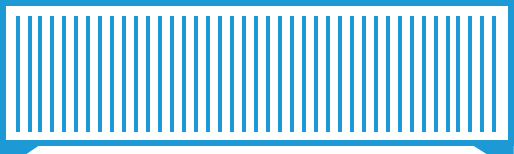
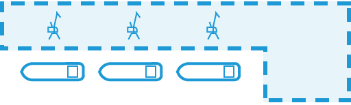
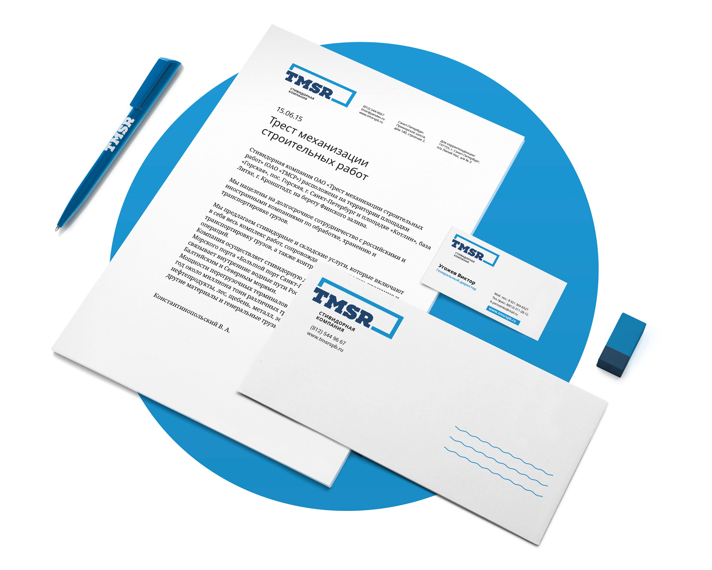
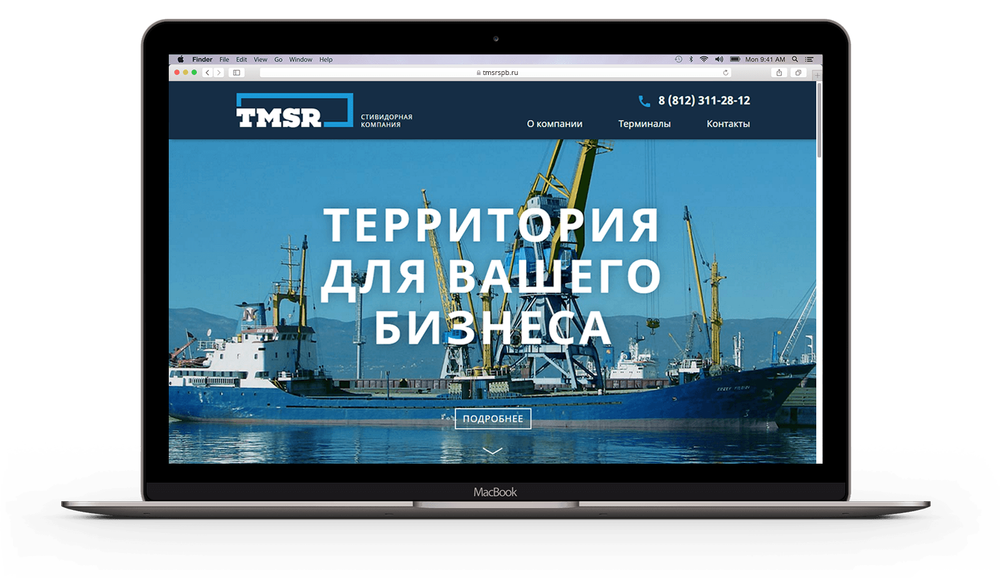
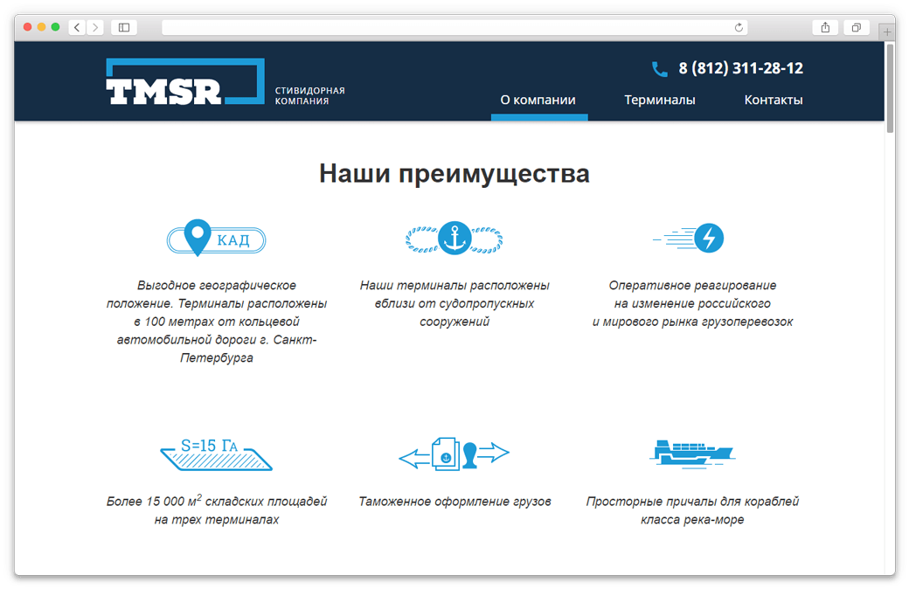
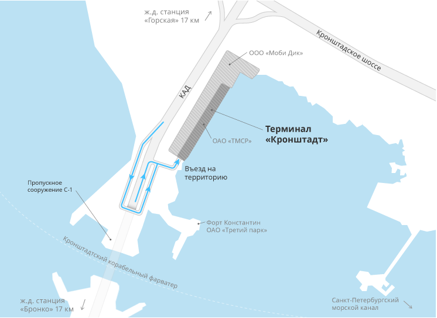
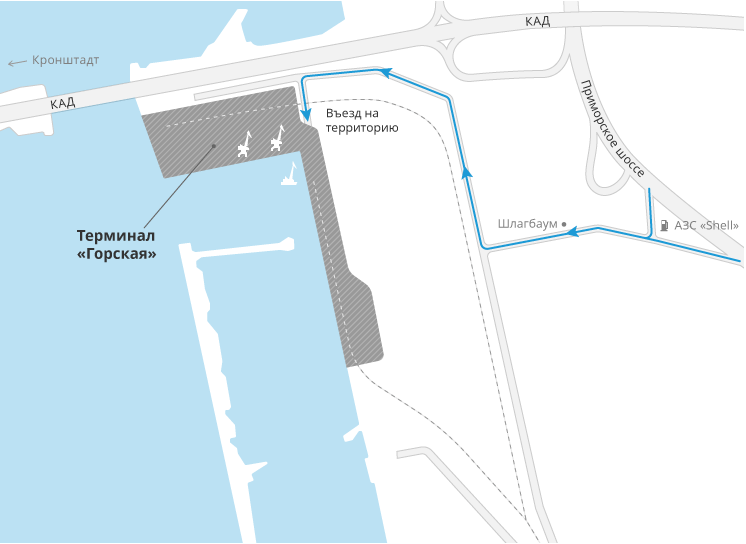
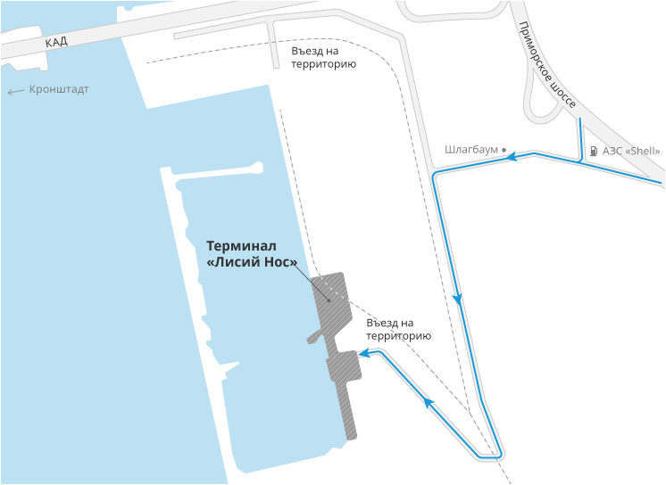
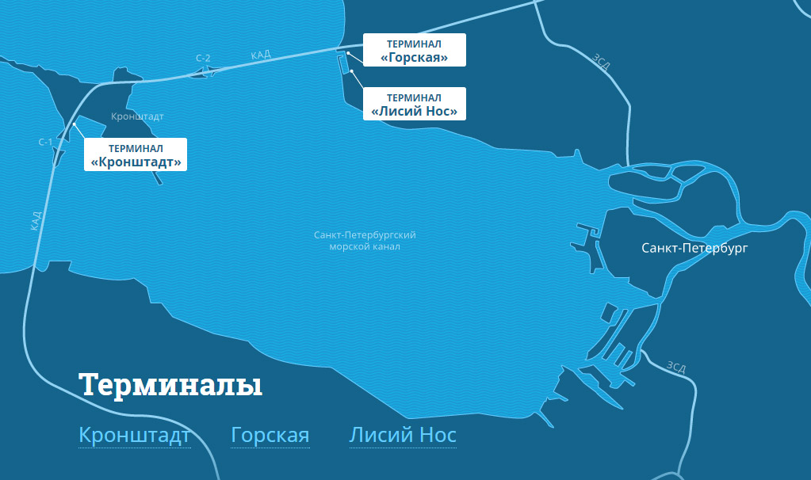
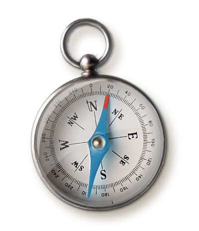

<!DOCTYPE html>
<html lang="ru">

</html>

<head>
  <title>Логотип, фирменный стиль и промо-сайт для компании TMSR — Вадик Матвеев</title>
  <meta charset="UTF-8" />
  <meta http-equiv="content-type" content="text/html; charset=UTF-8" />
  <meta http-equiv="x-ua-compatible" content="ie=edge" />
  <meta name="viewport" content="width=device-width, initial-scale=1.0" />
  <meta name="MobileOptimized" content="320" />
  <meta name="HandheldFriendly" content="true" />
  <meta name="description" content="Сайт-портфолио дизайнера Вадика Матвеева. Разработка дизайна сайтов, приложение, логотипов, айдентики и фирменных стилей" />
  <meta name="keywords" content="apps, мобильные приложения, mobile, iOS, Android, Windows Phone, iPhone разработка, разработка мобильных приложений" />
  <link href="http://fonts.googleapis.com/css?family=Roboto:100,300,400,700,400italic&amp;amp;subset=latin,cyrillic" rel="stylesheet" type="text/css" />
  <link href="../css/main.css" rel="stylesheet" />
  <link href="http://fonts.googleapis.com/css?family=Noto+Serif:400italic&amp;amp;subset=latin,cyrillic" rel="stylesheet" type="text/css" />
  <link href="http://fonts.googleapis.com/css?family=Roboto+Slab:700&amp;subset=latin,cyrillic" rel="stylesheet" type="text/css" />
  <link rel="stylesheet" href="../css/style--tmsr.css" /> </head>

<body class="tmsr">
  <header class="header">
    <div class="header__container">
      <a href="#" class="header__sandwich"></a>
      <a href="../index.html" class="header__logo"> <svg version="1.1" id="main-logo" xmlns="http://www.w3.org/2000/svg" xmlns:xlink="http://www.w3.org/1999/xlink" x="0px" y="0px" class="logo" width="122px" height="40.9166679px" viewBox="0 0 122 40.9166679" enable-background="new 0 0 122 40.9166679"
          fill="#fff" xml:space="preserve">
          	<g>
          		<polygon points="21.8790302,40 41.9587288,40 62.0385284,1 41.9587288,1 	"/>
          		<polygon points="62.0385284,40 82.1183319,40 102.1983261,1 82.1183319,1 	"/>
          		<g>
          			<polygon points="104.0096283,4.3382306 93.9697266,23.9472656 102.1983261,40 122.2782288,40 		"/>
          		</g>
          		<g>
          			<polygon points="20.06213,36.85466 30.1019306,17.1427612 21.8736305,0.987061 1.7936296,0.987061 		"/>
          		</g>
          		<polygon points="60.2272301,36.85466 70.2670288,17.1428604 63.850029,4.543961 53.8102303,24.2555618 	"/>
          	</g>			
          </svg> </a>
      <a href="whatobuy.html" class="header__next"> <span class="header__next-word">Следующий</span></a>
      <nav class="header__nav">
        <ul class="header__nav-list">
          <li class="header__nav-item"><a href="../index.html#projects">Проекты</a></li>
          <li class="header__nav-item"><a href="http://fooontic.tumblr.com/">Блог</a></li>
        </ul>
      </nav>
    </div>
    <div class="site-cache"></div>
  </header>
  <div class="tmsr__promo"></div>
  <section class="project">
    <div class="container-fluid">
      <div class="row">
        <div class="col-xs-12 col-lg-4">
          <h2 class="project__title">TMSR</h2>
          <h4 class="project__subtitle">Фирменный стиль и сайт</h4>
          <p class="project__year">Июль 2015</p>
        </div>
        <div class="col-xs-12 col-md-9 col-lg-6">
          <p class="project__flow">Компания TMSR занимается стивидоными услугами в Санкт-Петербурге. Встречает и разгружает суда приходящие в город, а также предоставляет место для хранения привезенного груза. Для выхода компании на следущий уровень и привлечения новых клиентов
            из ближнего зарубежья компании потребовался уверенный фирменный стиль и небольшой, но яркий и емкий сайт, рассказывающий о главных особенностях и преимуществах их услуг.<br><br>Придумал выразительный знак и разработал лаконичный фирменный
            стиль для него. В дальнешем занялся сайтом, который полностью спроектировал и разработал.</p>
        </div>
        <div class="col-xs-12 col-md-3 col-lg-2">
          <div class="project__madein project__madein--logomotiv">
            <p>Проект выполнен в&nbsp;<a href="http://logomotiv.ru/" class="link">Дизайн-&nbsp;студии Logomotiv</a></p>
            <p>Арт-директор: Иван&nbsp;Большов</p>
            <p>Менеджер: Анна&nbsp;Шелковникова</p>
            <p>Разработчик: Илья&nbsp;Мясоедов</p>
          </div>
        </div>
      </div>
    </div>
  </section>
  <div class="tmsr__logo">
    <div class="container-fluid">
      <div class="row">
        <div class="col-xs-12">
          <div class="tmsr__logo-history">
            <div class="tmsr__logo-history-1"></div>
            <div class="tmsr__logo-history-plus"></div>
            <div class="tmsr__logo-history-2"></div>
            <div class="tmsr__logo-history-equal"></div>
            <div class="tmsr__logo-history-3"></div>
          </div>
        </div>
        <div class="col-xs-12 col-md-10 col-md-offset-2 col-lg-7 col-lg-offset-4 col-xl-8">
          <p class="project__flow">За основу знака были взяты образы грузового контейнера и условное обозначение территории одного из терминалов компании. </p>
        </div>
      </div>
    </div>
  </div>
  <div class="tmsr__identity">
    <div class="tmsr__logo-sq"></div>
    <p class="tmsr__italic">Квадратная версия логотипа</p>
  </div>
  <div class="tmsr__animation">
    <div class="tmsr__kran"></div>
    <div class="tmsr__kran"></div>
    <div class="tmsr__port"></div>
    <div class="tmsr__ship-inner">
      <div data-wow-duration="5s" data-wow-delay="0,2s" class="tmsr__ship wow slideInRight"> </div>
    </div>
    <div class="tmsr__water"></div>
  </div>
  <div class="tmsr__laptop"><span class="tmsr__laptop-heading">Просто сайт
      <div class="tmsr__italic"><a href="tmsrspb.ru" class="link link--white">tmsrspb.ru</a></div></span>
    <div class="tmsr__laptop-inner"></div>
  </div>
  <div class="tmsr__site">
    <div class="row">
      <div class="col-xs-12 col-md-10 col-md-offset-2 col-lg-7 col-lg-offset-4 col-xl-8">
        <p class="project__flow">Сайт доступно объясняет почему лучше работать с компанией ТМСР.</p>
      </div>
    </div>
  </div>
  <div class="tmsr__external-inner hidden-md-down">
    <section id="terminals" class="terminals tmsr-frame">
      <div class="container-tmsr">
        <div class="row-tmsr">
          <div class="terminals__map">
            <ul class="terminals__pin-list">
              <li> <a href="#kronstadt" class="terminals__pin terminals__pin--kronstadt "><span class="terminals__pin--upper">Терминал</span>«Кронштадт»</a> </li>
              <li> <a href="#gorskaya" class="terminals__pin terminals__pin--gorskaya"><span class="terminals__pin--upper">Терминал</span>«Горская»</a> </li>
              <li> <a href="#lisiy-nos" class="terminals__pin terminals__pin--lisiy-nos"><span class="terminals__pin--upper">Терминал</span>«Лисий Нос»</a> </li>
            </ul>
          </div>
          <div class="terminals-more">
            <div id="terminals-more" class="column11 offset1">
              <h2 class="title white">Терминалы</h2>
              <div class="terminals-nav white">
                <ul class="terminals-nav__list">
                  <!-- <li class="active"><a href="#kronstadt">Кронштадт</a></li> -->
                  <li><a href="#kronstadt">Кронштадт</a></li>
                  <li><a href="#gorskaya">Горская</a></li>
                  <li><a href="#lisiy-nos">Лисий Нос</a></li>
                </ul>
              </div>
              <!-- terminals-nav -->
            </div>
            <!-- column11 offset -->
            <div class="terminals__content white">
              <!-- <div id="kronstadt" class="terminals__item active"> -->
              <div id="kronstadt" class="terminals__item">
                <div class="terminals__item__map column9">  </div>
                <div class="specials column3">
                  <p><span class="digits">25&nbsp;000<span class="digits-adds">&nbsp;м<sup>2</sup></span></span>Площадь треминала</p>
                  <p><span class="digits">2<span class="digits-adds"> причала</span></span>Протяженностью 420&nbsp;и 266 м</p>
                  <p><span class="digits">6-10<span class="digits-adds"> м</span></span>Глубина</p>
                </div>
                <div class="terminals-description column8 offset1">
                  <p>Расположен на&nbsp;острове Котлин в&nbsp;Невской губе гавани База Литке, на&nbsp;маршруте следования к&nbsp;судопропускному сооружению С-1. На&nbsp;территории терминала, площадью 25000 кв.м., расположены два причала протяженность 420&nbsp;м.
                    и&nbsp;266&nbsp;м. Действующие глубины 6-10 метров позволяют принимать суда для перевалки генеральных грузов, строительных и&nbsp;сыпучих материалов, нефтепродуктов.<br /><br />Причалы и&nbsp;грузовые площадки имеют автомобильные подъездные
                    пути с&nbsp;выходом на&nbsp;кольцевую автодорогу и&nbsp;Западный скоростной диаметр. Ближайшие железнодорожные станции Лисий Нос и&nbsp;Бронка Октябрьской железной дороги расположены в&nbsp;17&nbsp;км от&nbsp;причальных сооружений
                    терминала.<br /><br />Установленные на&nbsp;территории терминала оборудование и&nbsp;системы позволяют оказывать стивидорные услуги по&nbsp;перевалке цемента и&nbsp;нефтепродуктов. Энергообеспечение всех потребителей осуществляется
                    через трансформаторные подстанции, установленные на&nbsp;территории терминала.<br /><br />Охрана объектов осуществляется сотрудниками лицензированных охранных предприятий.</p>
                </div>
                <div class="terminals-ya-map column3"> <a class="link-tmsr" href="https://maps.yandex.ru/21776/kronstadt/?um=FPted0o5I6AHvV_fi4IDuSl4FeU4AKqB&amp;ll=29.708676%2C60.002790&amp;z=16&amp;l=map" target="_blank">Посмотреть на Яндекс Картах</a> </div>
              </div>
              <div id="gorskaya" class="terminals__item">
                <div class="terminals__item__map column9">  </div>
                <div class="specials column3">
                  <p><span class="digits">60&nbsp;000<span class="digits-adds">&nbsp;м<sup>2</sup></span></span>Площадь треминала</p>
                  <p><span class="digits">5<span class="digits-adds"> причалов</span></span>Протяженность 1 000 м</p>
                  <p><span class="digits">5,0<span class="digits-adds"> м</span></span>Глубина</p>
                  <p><span class="digits">20<span class="digits-adds"> тонн</span></span>Грузоподъемность 2-х портальных кранов. </p>
                  <p><span class="digits">16<span class="digits-adds"> тонн</span></span>Грузоподъемность плавучего крана. </p>
                </div>
                <div class="terminals-description column8 offset1">
                  <p>Расположен в&nbsp;районе поселка Лисий Нос. На&nbsp;территории терминала, площадью 60000 кв.м., расположены 5&nbsp;причалов протяженностью 1000&nbsp;м. Подходной канал длиной 6,8&nbsp;км., шириной 80&nbsp;м. соединяет портовый пункт
                    с&nbsp;Северным Кронштадтским фарватером и&nbsp;судопропускным сооружением С-2. Действующие глубины на&nbsp;канале позволяют принимать к&nbsp;обработке в&nbsp;портовом пункте суда типа &laquo;река-море&raquo; с&nbsp;осадкой до&nbsp;5,0&nbsp;м.<br
                    /><br />Железная дорога, расположенная на&nbsp;территории грузового района, обеспечивает выход на&nbsp;железнодорожные пути общего пользования в&nbsp;районе станции Лисий Нос Октябрьской железной дороги. Причалы и&nbsp;грузовые площадки
                    имеют автомобильные подъездные пути с&nbsp;выходом на&nbsp;кольцевую автодорогу, Приморское шоссе и&nbsp;Западный скоростной диаметр.<br /><br />На&nbsp;территории терминала размещены два портальных крана грузоподъемностью 20&nbsp;тонн
                    каждый и&nbsp;плавкран грузоподъемностью 16&nbsp;тонн. Энергообеспечение всех потребителей осуществляется через трансформаторные подстанции, установленные на&nbsp;территории терминала.<br /><br />Охрана объектов осуществляется сотрудниками
                    лицензированных охранных предприятий. </div>
                <div class="terminals-ya-map column3"> <a class="link-tmsr" href="https://maps.yandex.ru/102557/sestroretsk/?um=1d0geu8PiCtAMDskgPlF4Rg6kDx039pE&amp;ll=29.958391%2C60.030324&amp;z=15&amp;l=map" target="_blank">Посмотреть на Яндекс Картах</a> </div>
              </div>
              <div id="lisiy-nos" class="terminals__item">
                <div class="terminals__item__map column9">  </div>
                <div class="specials column3">
                  <p><span class="digits">60&nbsp;000<span class="digits-adds">&nbsp;м<sup>2</sup></span></span>Площадь треминала</p>
                  <p><span class="digits">3<span class="digits-adds"> причала</span></span>Протяженностью 300 м</p>
                  <p><span class="digits">5,0<span class="digits-adds"> м</span></span>Глубина</p>
                </div>
                <div class="terminals-description column8 offset1">
                  <p>Расположен в&nbsp;районе поселка Лисий Нос. На&nbsp;территории терминала, площадью 60000 кв.м. расположены 3&nbsp;причала протяженностью 300&nbsp;м. Подходной канал длиной 6,8&nbsp;км., шириной 80&nbsp;м. соединяет портовый пункт с&nbsp;Северным
                    Кронштадтским фарватером и&nbsp;судопропускным сооружением С-2. Действующие глубины на&nbsp;канале позволяют принимать к&nbsp;обработке в&nbsp;портовом пункте суда типа &laquo;река-море&raquo; с&nbsp;осадкой до&nbsp;5,0&nbsp;м.<br
                    /><br />Железная дорога на&nbsp;территории грузового района обеспечивает выход на&nbsp;железнодорожные пути общего пользования в&nbsp;районе станции Лисий Нос Октябрьской железной дороги. Причалы и&nbsp;грузовые площадки имеют автомобильные
                    подъездные пути с&nbsp;выходом на&nbsp;кольцевую автодорогу, Приморское шоссе и&nbsp;Западный скоростной диаметр.<br /><br />Энергообеспечение всех потребителей осуществляется через трансформаторные подстанции, установленные на&nbsp;территории
                    терминала.<br /><br />Охрана объектов осуществляется сотрудниками лицензированных охранных предприятий.<br /></p>
                </div>
                <div class="terminals-ya-map column3"> <a class="link-tmsr" href="https://maps.yandex.ru/102557/sestroretsk/?um=3vpC1yG-oQMPDhgBSsLzF8qFIBeoqkid&amp;ll=29.967719%2C60.027795&amp;z=16&amp;l=map" target="_blank">Посмотреть на Яндекс Картах</a> </div>
              </div>
            </div>
            <!-- terminals__content -->
          </div>
          <!-- terminals-more -->
        </div>
        <!-- row -->
      </div>
      <!-- container-tmsr -->
    </section>
    <!-- terminals -->
    <script src="http://tmsrspb.ru/js/jquery-2.1.4.min.js"></script>
    <script src="http://tmsrspb.ru/js/wow.js"></script>
    <script>
      ///// WOW-animate /////
      new WOW().init();
      ///// WOW-animate /////
      ///// Top-menu scroll /////
      // Cache selectors
      var lastId,
        topMenu = $("#top-nav"),
        topMenuHeight = topMenu.outerHeight(),
        // All list items
        menuItems = topMenu.find("a"),
        // Anchors corresponding to menu items
        scrollItems = menuItems.map(function()
        {
          var item = $($(this).attr("href"));
          if (item.length)
          {
            return item;
          }
        }),
        noScrollAction = false;
      // Bind click handler to menu items
      // so we can get a fancy scroll animation
      menuItems.click(function(e)
      {
        var href = $(this).attr("href"),
          offsetTop = href === "#" ? 0 : $(href).offset().top - topMenuHeight + 1;
        noScrollAction = true;
        $('html, body').stop().animate(
        {
          scrollTop: offsetTop
        },
        {
          duration: 300,
          complete: function()
          {
            menuItems.parent().removeClass("active").end().filter("[href=" + href + "]").parent().addClass("active");
            setTimeout(function()
            {
              noScrollAction = false;
            }, 10);
          }
        });
        e.preventDefault();
      });
      // Bind to scroll
      $(window).scroll(function()
      {
        if (!noScrollAction)
        {
          // Get container scroll position
          var fromTop = $(this).scrollTop() + topMenuHeight;
          // Get id of current scroll item
          var cur = scrollItems.map(function()
          {
            if ($(this).offset().top < fromTop) return this;
          });
          // Get the id of the current element
          cur = cur[cur.length - 1];
          var id = cur && cur.length ? cur[0].id : "";
          if (lastId !== id)
          {
            lastId = id;
            // Set/remove active class
            menuItems.parent().removeClass("active").end().filter("[href=#" + id + "]").parent().addClass("active");
          }
        }
      });
      ///// Top-menu scroll /////
      ///// More Button /////
      $("#more").click(function()
      {
        $("html,body").animate(
        {
          scrollTop: $(document).height() / 7.4,
        }).fadeIn(350);
      });
      ///// More Button /////
      /////  Tabs /////
      $(document).ready(function()
      {
        $(".terminals__map .terminals__pin-list a").on("click", function(e)
        {
          var currentAttrValue = $(this).attr("href");
          // Show/Hide Tabs
          $(".terminals__item" + currentAttrValue).fadeIn(400).siblings().hide();
          // Change/remove current tab to active
          $("a[href=" + currentAttrValue + "]").parent("li").addClass("active").siblings().removeClass("active");
          e.preventDefault();
        });
        // $("terminals-nav__list li").on("click", function(){
        // 	if ($(this).hasClass("active")) {
        // 		$(".terminals__item").removeClass("active");
        // 		$(this).parent("li").removeClass("active");
        // 		}
        // 	});
      });
      $(".terminals__pin").click(function()
      {
        $("html,body").animate(
        {
          scrollTop: $(document).height() / 1.2,
        }).fadeIn(350);
      });
      jQuery(document).ready(function()
      {
        jQuery(".terminals-nav .terminals-nav__list a").on("click", function(e)
        {
          var currentAttrValue = jQuery(this).attr("href");
          // Show/Hide Tabs
          jQuery(".terminals__item" + currentAttrValue).fadeIn(400).siblings().hide();
          // Change/remove current tab to active
          jQuery(this).parent("li").addClass("active").siblings().removeClass("active");
          e.preventDefault();
        });
      });
      /////  Tabs /////
    </script>
  </div>
  <div class="tmsr__terminals-map hidden-sm-up"></div>
  <div class="container-fluid">
    <div class="row">
      <div class="col-xs-12 col-md-10 col-md-offset-2 col-lg-7 col-lg-offset-4 col-xl-8">
        <p style="margin-bottom: 50px" class="project__flow">Для клиентов компании крайне важно знать точное расположение терминалов. По этой причине нарисовал подробные карты для каждого из терминалов, убрав лишнее и оставив только необходимую информацию, такую как расстояние от ближайшего пропускного
          сооружения, расположение относительно КАД, схемы заезда и выезда транспорта и саму площадь терминала. </p>
      </div>
    </div> </div>
  <footer class="footer">
    <div class="container-fluid">
      <div class="row">
        <div class="likely-inner col-xs-12 col-md-6 col-md-push-6"><span class="share">Поделиться </span>
          <div class="likely likely-big">
            <div data-via="fooontic_" class="twitter"></div>
            <div class="facebook"></div>
            <div class="vkontakte"></div>
            <div data-text="Зацени-ка" class="telegram"></div>
          </div>
        </div>
        <div class="col-xs-12 col-md-6 col-md-pull-6">
          <div class="footer__copyright">© 2015</div>
          <div class="footer__mail">Пишите мне на <a class="link">fooontic@gmail.com</a></div>
        </div>
      </div>
    </div>
  </footer>
  <script src="../js/main.min.js"></script>
  <script>
    new WOW().init();
  </script>
</body>